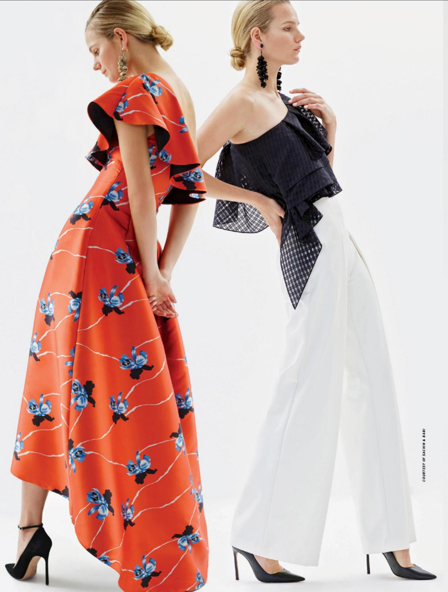
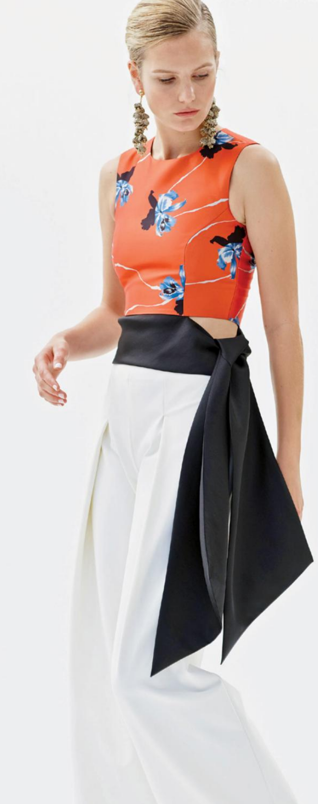
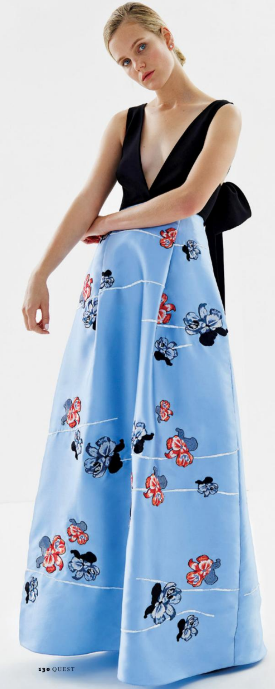

Call it fashion's categorical imperative: for a special-occasion item to be perfect, it must be chic, well-made, and at a reasonable price. Often shoppers have to settle for the old "two out of three ain't bad" but, actually, the results usually are. Women end up with either something cute that falls apart, a piece with sturdy seams that even their grandmother finds dowdy, or the perfect outfit whose price tag they can't quite justify for a piece worn only once or twice.
There is also increased pressure to keep updating your wardrobe thanks to this social media age of constant chronicling, trying to avoid the ever-relatable moment when you look through party pictures and realize you've trotted out the same outfit one too many times.
Luckily, two designers heard the call, as if millions of voices cried out: "Chic! Well made! And reasonable priced!"
Babi and Sachin Ahluwalia, creators of the label Sachin & Babi, have hit that trifecta again and again, particularly with their special-occasion dresses and evening seperates, the latter of which have been lauded as a versatile and creative way to dress up. "Because the modern girl's wardrobe is adapting to the necessity of the seperates, we find the clientele is embracing them," the two explained.

The desginers' ideas become looks bursting with many different kinds of energy. The inspiration behind their latest collection? "Classic Latin silhouettes, rich jewel tones, Flamenco flair, and a recent trip to Valencia and Grenada." The result: ruffled tiered flamingo maxiskirts, modern boleros, and their signature handiwork, which stiches together Old World elegance and modern practicality.
During this year's New York Fashion Week, Sachin & Babi presented their Fall 2016 collection of evening wear at 632 on Hudson. Amidst an impressive assortment of antiques, the collection was draped over models who were themselves draped over couches, perched on a brass bed, or leaning over a balustrade.
On top of the usual American fashion glossies like WWD and Vogue, the international community were also on hand to give their stamps of approval, such French publication Madame Figaro, proving the brand can translate across continents.

Published in the March Issue of Quest Magazine